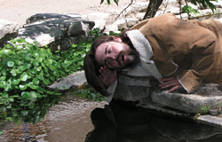

In the latest installment of Honest to God, we’re taken behind the scenes of Fred and Joel’s version of The 40-Year-Old Virgin, made earlier this year for the Rewind Kindly competition.


Microhoo!
|

For weeks now, analysts and armchair financial nerds have been mulling over what it will mean if software megacorp Microsoft buys Web monkey farm Yahoo! Would Microsoft-Yahoo! (known forevermore as Microhoo!) challenge Google to some kind of Web domination duel and win? Probably not. As much as I would love to see Bill Gates, Sergey Brin, and Jerry Yang in some kind of unholy three-way Jell-O wrestling match, I know it will never come to pass.
The Happiest Hours: El Arroyo
|

El Arroyo
All you need to know is that every Thursday between 2pm and 6pm, El Arroyo has $.99 margaritas (bring cash!). And it gets very crowded. But if you’re not into margaritas, their regular happy hour lasts until 7pm, and specials include domestic beer for $1.95 and imported beer for $2.75.
Slideshow: Austin gets 3D on Google Earth
|
 Ooh, just like Grand Theft Auto. Except without all the bazooka-wielding criminals. At least for now.
Ooh, just like Grand Theft Auto. Except without all the bazooka-wielding criminals. At least for now.Some 3D modelers have been some busy bees lately – most of Austin’s downtown landscape has been converted into 3D photo-realistic models and placed inside Google Earth. But it doesn’t stop there, buildings from the UT Campus, South Congress, and even the East side have been built as well. We’re starting to have a nice little virtual tour of the city on our hands – thanks Google.
If you’re not familiar with Google Earth, it will totally blow your mind. Think Google Maps but with higher detail and extra features such as the photo-realistic buildings, 3D terrain, advanced camera controls, places of interest, and lots of community-generated markers (like secret places). You can view a nice tour of all these features here.
Now that you’re convinced. Here’s how to start exploring Austin or anyplace else in the world on Google Earth.
UTPD’s Campus Watch: Trapped in the Turtle Pond
|
Campus Watch is a newsletter sent out a few times per week by Officer Darrell Halstead at the University of Texas at Austin Police Department. It contains a summary of campus activity reported to or observed by UTPD patrol officers. Here are some gems from the most recent Campus Watch emails sent out over the last couple of days:
Turtle Pond | 200 W Inner Campus Dr

courtesy Texas Travesty The Turtle Whisperer strikes again?
Consumption of Alcohol by a Minor (4 Counts): A UT officer responded to the Turtle Pond on a report of several subjects throwing rocks. During the investigation, the officers learned that one subject had gotten stuck in the middle of the pond and his friends were building a rock bridge so that he could walk out of the pond. As the investigation continued, the officers soon discovered that all four subjects were under the legal age of 21 and had been drinking alcohol because they were bored. All four subjects were issued field release citations for Consumption of Alcohol by a Minor and were also issued referrals to the Dean of Students’ Office. Occurred on: 4-13-08, at 12:40 AM.


Recent comments